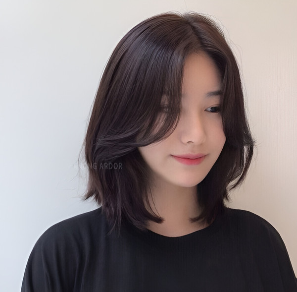

Tóc dài xõa thẳng rẽ ngôi giữa - Tuyên ngôn của vẻ đẹp tối giản và quyền lực
Đây là kiểu tóc kinh điển thể hiện sự tự tin tuyệt đối vào đường nét gương mặt, một lựa chọn của sự sang trọng thầm lặng. Phần rẽ ngôi 5/5 hoàn hảo tựa như một đường kẻ chỉ đối xứng, tạo ra một trục cân bằng hoàn mỹ, kết hợp với suối tóc thẳng mượt sẽ thu hút mọi ánh nhìn vào chiếc cằm V-line thanh mảnh và cấu trúc gương mặt cân đối của bạn. Rất ít dáng mặt nào có thể chinh phục ngôi giữa một cách xuất sắc như mặt trái xoan. Kiểu tóc này toát lên vẻ thanh lịch, hiện đại, không bao giờ lỗi mốt và mang trong mình một sức hút quyền lực khó cưỡng, phù hợp từ môi trường công sở chuyên nghiệp đến những buổi tiệc tối sang trọng.
Tóc xoăn sóng lơi tự nhiên - Vũ điệu của sự quyến rũ và lãng mạn

Những lọn tóc được uốn xoăn sóng to, mềm mại và được chải bung một cách tự nhiên sẽ mang đến một khí chất sang chảnh, thời thượng và đầy cuốn hút. Các lọn tóc cuộn nhẹ nhàng như những con sóng nhảy múa quanh gương mặt, tạo thêm độ phồng và sự chuyển động đầy mê hoặc, giúp tăng cường hiệu ứng thị giác mà hoàn toàn không che lấp đi cấu trúc nền tảng hoàn hảo. Kiểu tóc này tạo ra một cuộc chơi thú vị giữa ánh sáng và bóng tối trên mái tóc, làm nổi bật làn da và ánh mắt. Đây là lựa chọn lý tưởng cho những buổi tiệc, những cuộc hẹn hò lãng mạn hay đơn giản là khi bạn muốn cảm thấy mình nữ tính và thu hút nhất.
Tóc ngắn tỉa layer / Bob cá tính - Dấu ấn của nàng thơ hiện đại

Nếu bạn khao khát một cuộc F5 ngoạn mục cho vẻ ngoài, đừng ngần ngại thử sức với tóc pixie tỉa layer hay một mái tóc bob uốn cúp nhẹ nhàng ôm lấy đường viền cổ. Những kiểu tóc ngắn này sẽ giải phóng hoàn toàn gương mặt bạn, tựa như vén một bức màn để những nét đẹp nhất được phô diễn: đôi mắt sâu thẳm, gò má cao kiêu hãnh, và đặc biệt là chiếc cổ cao thanh tú cùng đường xương quai xanh gợi cảm. Bạn sẽ trông như một minh tinh màn bạc cổ điển vừa bước ra từ một thước phim đen trắng, vừa cá tính, tự do, vừa mang một vẻ thanh lịch, trí tuệ mà không cần phải gắng gượng. Đây là kiểu tóc của sự tự tin và bản lĩnh.